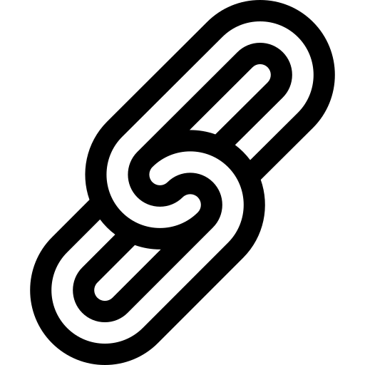

Examples¶
Note
In order to access these example files, it will be necessary to either download or clone the entire Displacement_strain_planet repo from GitHub. The files will be located in the directory examples. To run the jupyter notebook, you must install jupyter notebooks with pip (see Installation).
Mars¶
Mars_crust_displacement.pyA script that demonstrates how to calculate the moho-relief on Mars using global gravity and topography data. The moho relief is splited in an isostatic part and a displacement part, which depends on the elastic thickness of the lithosphere. The script then computes the principal horizontal strains and their directions given the estimated displacement.
Mars_SouthPolarCap_displacement.pyA script that demonstrates how to calculate iteratively the flexure underneath the south polar cap of Mars as a function of elastic thickness and ice density. This computation is similar to that done in e.g., Broquet et al. (2021), in review to JGR:Planets.
Run_demo.ipynbA jupyter notebook that shows many of the functionalities of Displacement_strain_planet using Mars as an example: moho-relief calculations under various assumptions, including Airy or Pratt isostasy, displacement calculations due to a mantle plume underneath Tharsis or due to internal loading in phase with the surface topography, strain calculations.
Venus¶
Venus_crust_displacement.pyA script that demonstrates how to calculate the moho-relief on Venus using global gravity and topography data. The moho relief is splited in an isostatic part and a displacement part, which depends on the elastic thickness of the lithosphere. The script then computes the principal horizontal strains and their directions given the estimated displacement.